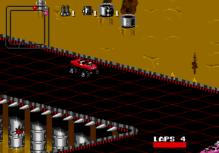

Mega Drive - Jogos com musicos famosos
 :::. Por B-Mark
:::. Por B-Mark
Nos anos 90 percebi que a industria da musica e a industria do videogame
estavam andando juntas, mesmo que de uma maneira discreta, ou seja, com
pouca divulgação, pelo menos por aqui no Brasil onde as informações eram
obtidas através das revistas de games.
E um jogo que me marcou na época foi Moonwalker. Joguei as versões
para Arcade, Master System e Mega Drive pelo fato do jogo ser estrelado
por Michael Jackson e por ter suas musicas tocando durante o
jogo.
Nos games antigos um caso de jogo com musicas licenciadas é Rock n Roll
Racing, com uma trilha sonora composta por clássicos de musicos como
Santana e Black Sabbath.
Atualmente as produtoras de games tem investido bastante em trilha
sonora de jogos, obtendo licenciamento de musicas para fazerem parte de
suas trilhas sonoras como se fossem filmes como nas series Need For
Speed, FIFA Soccer e GTA ou então usando musicas para jogos musicais
como Guitar Hero, Rock Band e Singstar. Tambem criam jogos baseados
em musicos como o Guitar Hero-Aero smith, Guitar Hero-Van Halen,
SingStar-Queen e SingStar Abba. Ha a participação do cantor Phil Collins
em GTA Vice City Stories em 2 missões do jogo em que Victor Vance deve
defender o cantor de assassinos que foram contratados para mata-lo.
Esse artigo fala sobre os jogos de Mega Drive que contaram com a
participação de musicos na historia do jogo ou então um jogo que envolve
seus nomes.

Fabricante - Viacom Newmedia
Ano - 1994
Beavis e Butthead são 2 personagens de desenho animado foram
criados por Mike Judge. São idiotas e fãs de Rock, costumam
assistir videoclipes e fazer comentarios sobre eles em interrupções dos
episodios. Foi exibido na MTV de 1993 a 1997, além de terem um longa
metragem chamada Beavis and Butthead-America, produzido em
1996.
No jogo, os dois garotos estavam assistindo TV quando de repente
aparece um anuncio na TV sobre o show da banda Gwar, que é pouco
conhecida por aqui, de genero Trash Metal. Suas principais
caracteristicas são o fato dos membros usarem fantasias de
monstros inspiradas em filmes de terror e ficção
cientifica, e pelas suas musicas satiricas com criticas a valores
morais e letras obscenas. Após comprar os ingressos para o
esperado evento, o poddle do Sr. Anderson os pega e ao cuspir eles
são triturados pelo seu cortador de grama e se espalham pela
cidade.
O jogo é um misto de ação e estratégia, cujo objetivo é encontrar os
pedaços do ingresso e junta-los para poderem assistir ao show da banda.


Fabricante - Electronic Arts
Ano - 1992
Pinball baseado no grupo de Glam Metal chamado Motley Crue, com as
musicas Dr. Feelgood, Live Wire e Home Sweet Home como parte da trilha
sonora do jogo.
Fabricante - Sega
Ano - 1990
Jogo clássico do Mega Drive baseado no filme de mesmo nome produzido em
1988, e estrelado pelo cantor Michael Jackson, considerado por muitos o
Rei do Pop e que trouxe varias inovações para o meio da musica,
falecendo em 2009.
No jogo, Michael deve salvar as crianças que foram sequestradas pelo criminoso
Mr. Big e sua gangue, em varias fases com as musicas Smooth Crminal, Beat
It , Another Part of Me, Bllie Jean e Bad tocando durante o jogo alem
da musica Thriller que é tocada na 3ª fase onde Michael luta contra
zumbis.
Fabricantes - Acclaim e Rage Software
Ano - 1996
Revolution X marcou a estreia da banda Aerosmith nos games em que o
jogador é levado para uma época alternativa do ano de 1996, onde uma
aliança formada por governantes corruptos e militares, tomam o poder
através do disfarce da organização NON - New Order Nation, e conseguem
banir a musica, televisão e videogames do mundo além de raptar os
membros do Aerosmith.
O jogo tem em sua trilha sonora as musicas Eat the Rich, Sweet Emotion,
Toys in the Attic e Walk this Way, e uma versão de Musak (musica de
elevador) da musica Love in an Elevator que é tocada na fase da selva.
A versão dos Arcades teve uma boa aceitação, mas as versões para
consoles tiveram baixas vendas devido aos reviews da época que deram
notas baixas ao jogo.

Fabricantes - Blizzard e Interplay
Ano - 1993
Jogo de corrida disputado em vários planetas onde ha um vale tudo para vencer
a corrida com o uso de armas para destruir seus adversarios. Um de seus
participantes é o viking Olaf, do jogo The Lost Vikings, um outro game da
Blizzard.
Nesse caso o jogo conta com trilha sonora formada por varios clássicos
do rock que são Paranoid do Black Sabbath, The Peter Gunn Theme do Henry
Mancini, Highway Star do Deep Purple, Born to Be Wild do Steppenwolf,
Bad to the Bone do George Thorogood e por fim a musica Radar Love do
Golden Earring, que é exclusiva dessa versão para Mega Drive.
Acesse o Trombone e comente sobre essa matéria!


Em 90/91 mais ou menos, a Sega ganhou da Tecmo a oportunidade de fazer umas versões do Ninja Gaiden para os seus consoles. Essa chance é comparável ao que Deus fez quando deu o mundo para Adão.